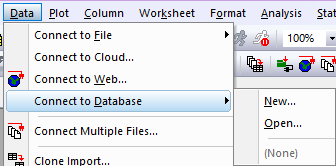
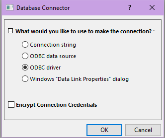
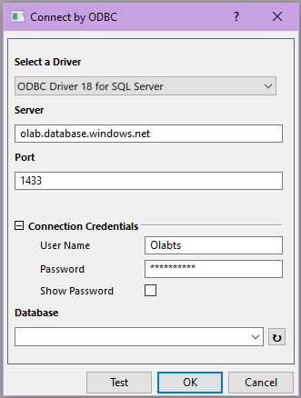
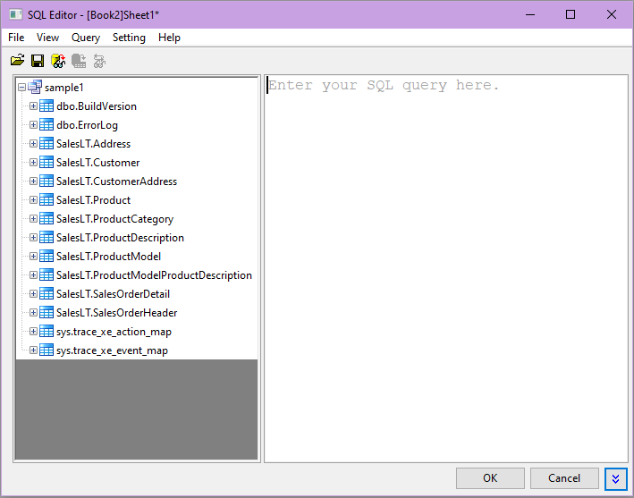
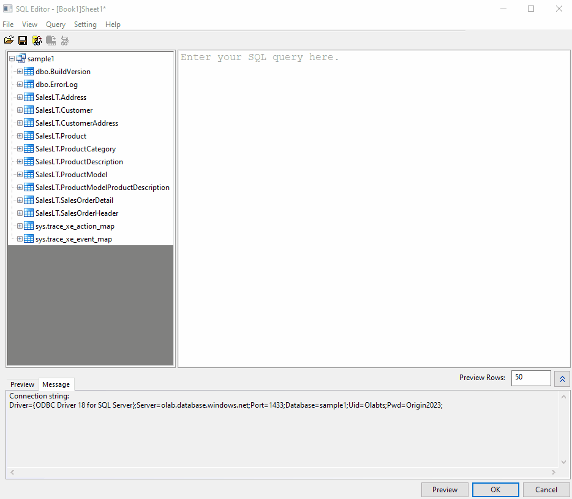
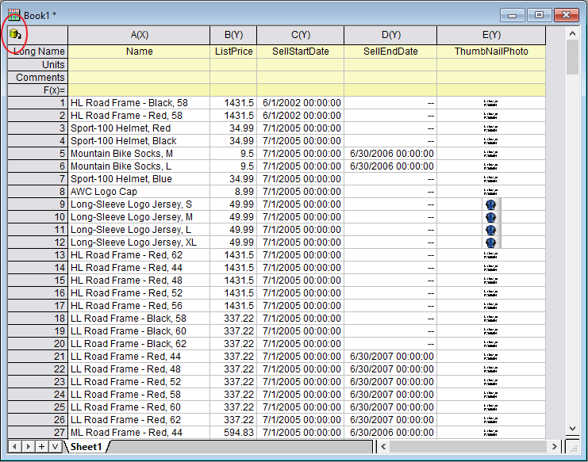
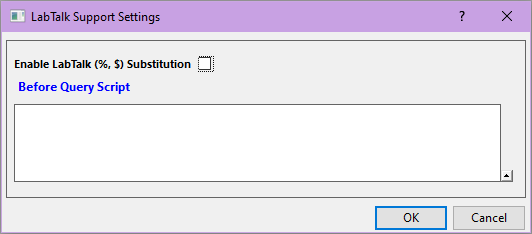
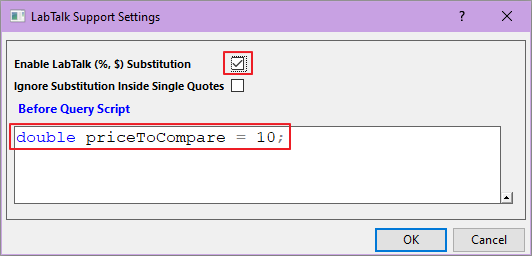
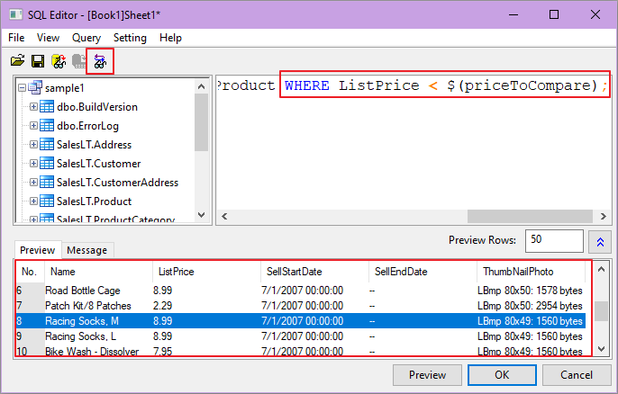

Daten aus einer Datenbank importieren
ImpData-from-DB
Zusammenfassung
 |
Die in diesem Tutorial verwendete Datenbank wurde auf Microsoft Azure eingerichtet.
|
Dieses Tutorial zeigt, wie eine Verbindung zu einem SQL-Server hergestellt wird und die gewünschten Daten mit Origins SQL-Editor aus festgelegten Tabellen extrahiert werden, wie eine LabTalk-Variable in SQL-Skript zur einfachen Modifizierung definiert und die Verbindung bzw. die Verbindung plus Abfrage zur zukünftigen Verwendung gespeichert werden.
Das Vorgehen basiert auf Origin 2023b.
Was Sie lernen werden
Dieses Tutorial zeigt Ihnen, wie Sie:
- Daten aus einer Datenbank importieren.
- Daten erneut importieren.
- LabTalk-Unterstützung im SQL-Editor
Schritte
Daten mit dem SQL-Editor importieren
- Öffnen Sie ein neues Arbeitsblatt. Wählen Sie im Menü Daten: Mit Datenbank verbinden: Neu .... Wählen Sie im Dialog Datenbankkonnektor die Option ODBC-Treiber und klicken Sie auf OK.
-


- Erstellen Sie die Verbindung zu einer Beispieldatenbank. Legen Sie die Serverinformationen fest, einschließlich den Login-Benutzernamen und das Passwort mit den untenstehenden Einstellungen:
Server Driver=ODBC Driver 18 FOR SQL Server; Server=olab.DATABASE.windows.net; Port=1433; USER Name=Olabts; Password=Origin@2024;

Klicken Sie auf Verbindung testen, um sicherzustellen, dass die Verbindung erfolgreich besteht.
|
Sollte das Verbinden zur Datenbank fehlschlagen, gehen Sie zu dieser Seite, um den neuesten ODBC-SQL-Treiber herunterzuladen und zu installieren.
|
- Klicken Sie auf die Schaltfläche
 rechts vom Datenbankeintrag und stellen Sie sicher, dass die Datenbank Beispiel1 gezeigt wird.
rechts vom Datenbankeintrag und stellen Sie sicher, dass die Datenbank Beispiel1 gezeigt wird.
Klicken Sie auf die Schaltfläche OK, um den Dialog SQL-Editor zu öffnen.
- Alle Tabellen in der Datenbank werden im linken Bedienfeld aufgelistet.

Wählen Sie im Menü Datei: Verbindungszeichenkette zeigen. Die Verbindungszeichenkette wird im Nachrichtenfeld unten gezeigt. Alternativ können Sie diese Verbindungszeichenkette in Schritt 2 verwenden, um die Verbindung herzustellen.
Driver={ODBC Driver 18 FOR SQL Server};Server=olab.DATABASE.windows.net;Port=1433;DATABASE=sample1;Uid=olabts;Pwd=Origin@2024;
- Wählen Sie Datei: Verbindung speichern unter, um die Datenquelldatei als MyDataSource.ods zu speichern.
- Jetzt extrahieren Sie Daten aus der Tabelle Product, um die Produktliste zu erstellen. Sie können das SQL-Skript neu schreiben. Klicken Sie doppelt auf den Knoten im linken Bedienfeld. Sie erhalten Unterstützung beim Hinzufügen der Tabelle und des Feldnamens im Editor. Erstellen Sie die Abfrage, indem Sie dem Video unten folgen, oder kopieren Sie das folgende SQL-Skript im rechten Bedienfeld.
SELECT Name ,ListPrice ,SellStartDate ,SellEndDate ,ThumbNailPhoto FROM SalesLT.Product

- Klicken Sie auf die Schaltfläche Ergebnisdaten in Vorschau zeigen
 , um die Daten in der Vorschau zu sehen. Wählen Sie Datei: Verbindung und Abfrage speichern unter im Menü, um die Verbindung und die Abfrage als MyQuery.odq zu speichern. Zukünftig können Sie die Verbindungseinstellungen und das Abfrageskript im Menü Daten: Mit Datenbank verbinden: MyQuery.odq laden.
, um die Daten in der Vorschau zu sehen. Wählen Sie Datei: Verbindung und Abfrage speichern unter im Menü, um die Verbindung und die Abfrage als MyQuery.odq zu speichern. Zukünftig können Sie die Verbindungseinstellungen und das Abfrageskript im Menü Daten: Mit Datenbank verbinden: MyQuery.odq laden.
- .
- Klicken Sie auf die Schaltfläche OK, um die Datei zu importieren. Sobald sie importiert wurden, wird das Arbeitsblatt mit dem Datenblatt verbunden und ein gelbes Symbol wird oben links im Arbeitsblatt angezeigt.

Aus Datenbank erneut importieren
Nachdem die Daten importiert sind, werden die Verbindung und die Abfrage automatisch im Datenkonnektor gespeichert. Sie können auf die Schaltfläche Datenbankkonnektor  klicken und Importieren auswählen, um Daten aus der Datenbank erneut zu importieren. Versuchen Sie die folgenden Schritte.
klicken und Importieren auswählen, um Daten aus der Datenbank erneut zu importieren. Versuchen Sie die folgenden Schritte.
- Klicken Sie auf und wählen Sie Importierte Daten entsperren.
- Löschen Sie oder verändern Sie einige Daten im Arbeitsblatts.
- Klicken Sie auf und wählen Sie Importieren. Die Daten sollten zurück sein.
- Um die Abfrage bei aktivem Arbeitsblatt zu modifizieren, klicken Sie auf und wählen Sie SQL-Editor.
- Um eine neue SQL-Abfrage für die gleiche Datenbank einzurichten, tun Sie eines der folgenden Dinge:
- Duplizieren Sie die Arbeitsmappe (Fenster: Duplizieren). Klicken Sie in der neuen Mappe auf und wählen Sie den SQL-Editor, um die Abfrage zu bearbeiten.
- Öffnen Sie eine neue Arbeitsmappe. Wählen Sie Daten: Mit Datenbank verbinden. Alle gespeicherten ODS- und ODQ-Dateien werden hier aufgelistet.
- Wählen Sie MyQuery.ODQ. Der Dialog Datenbankeditor wird mit der gespeicherten SQL-Abfrage geöffnet. Klicken Sie zum Importieren auf die Schaltfläche OK.
 |
Per Standard werden die importierten Daten nicht mit dem Projekt (OPJU-Datei) gespeichert, da die große Datenbank die OPJU-Datei riesig machen kann. Wenn Sie die Daten mit dem Projekt speichern möchten, klicken Sie auf und deaktivieren Sie Importierte Daten beim Speichern ausschließen. Speichern Sie dann das Projekt.
|
LabTalk-Unterstützung im SQL-Editor
Jetzt nehmen Sie Änderungen an der SQL-Abfrage vor, um nur die Produkte mit einem Teilepreise von weniger als $10 zu erhalten. In diesem Abschnitt erfahren Sie, wie eine numerische Labtalk-Variable des Preises mit der Bedingung definiert wird, so dass es in Zukunft einfacher ist, die Abfrage zu ändern.
- Klicken Sie auf und wählen Sie SQL-Editor.
- Um einen numerische LabTalk-Variable hinzuzufügen, wählen Sie Anfrage: LabTalk..., um den Dialog Einstellungen der Unterstützung von LabTalk zu öffnen.

- Aktivieren Sie das Kontrollkästchen Substitution durch LabTalk (%,$) aktivieren.
- Geben Sie das folgende Skript:
double priceToCompare = 10;
in das Feld Skript vor Anfrage ein, um die numerische LabTalk-Variable priceToCompare zu definieren. Klicken Sie auf OK.

- Fügen Sie am Ende des SQL-Skripts im rechten Bedienfeld Folgendes hinzu:
WHERE ListPrice < $(priceToCompare)
- Klicken Sie auf die Schaltfläche
 , um eine Vorschau der SQL-Abfragezeichenkette mit substituierter LabTalk-Variable im Feld des SQL-Editors anzuzeigen.
, um eine Vorschau der SQL-Abfragezeichenkette mit substituierter LabTalk-Variable im Feld des SQL-Editors anzuzeigen.

- Klicken Sie auf OK, um diese Daten zu importieren.
- Von nun an müssen Sie nur den Wert von priceToCompare im Dialog Einstellungen der Unterstützung von LabTalk ändern. Die SQL-Abfrage muss nicht mehr geändert werden.